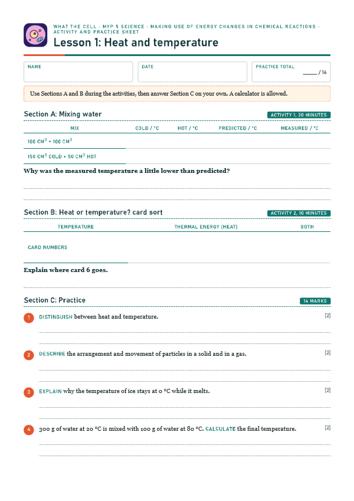

By the end of the lesson you can
- Describe particles in solids, liquids and gases
- Distinguish between heat and temperature
- Explain changes of state using particles
- Predict the temperature when two samples of water mix
Keys: arrows or a presentation clicker move the slides, F for full screen. Slides with a red dot have a video or simulation.
Videos (all 5 minutes or less)
- 3:16
Heat vs temperature
Lumina Learning. What temperature measures, what heat is, and why a bath holds more heat than a cup. Slide 8.
- 4:36
Changes of state
FuseSchool. The six changes of state and why the temperature stays still while water boils. Slide 10.
Simulations
- Lab
Energy Changes Lab: heat or temperature?
What the Cell. Mix two beakers of water at different temperatures and volumes, predict the final temperature, then pour.
- PhET
States of Matter
PhET, University of Colorado Boulder. Heat a solid until it melts and boils and watch the particles.
Print and practise

Activity and practice sheet
Used in the lesson’s activities, with practice questions. Your teacher has the answers.
Download (PDF)Lesson 1 slides
All 22 slides in one file, to read again or print. The video buttons on the slides open YouTube.
Download the slides (PDF)Revising? The Revision tab on the unit page has the unit notes and review.
Class activity pack
Everything to print for the lesson’s activities: picture cards, sorting mats, station cards with their kit lists, and the teacher’s set-up notes. Print it before class.
Download the activity pack (PDF)Notes: Heat and temperature
Particles are always moving
In a solid, particles vibrate in fixed places. In a liquid they are close but slide past each other. In a gas they are far apart and move fast in all directions. Heating makes particles move faster: they gain kinetic energy.
Temperature
Temperature is the average kinetic energy of the particles. It is measured in °C or kelvin with a thermometer. A change of 1 °C is the same as a change of 1 K.
Thermal energy (heat)
Heat is the total energy of all the particles, measured in joules (J). It depends on the temperature, the number of particles (the mass) and the material. A swimming pool at 28 °C holds far more thermal energy than a cup of tea at 80 °C.
Heat flows from hot to cold
Heat always flows from the hotter object to the colder one until they reach the same temperature (thermal equilibrium). A metal spoon feels colder than a wooden one at the same temperature because metal conducts heat away from your hand faster.
Changes of state
While ice melts or water boils, the temperature stays the same: the energy separates the particles instead of speeding them up. Melting and boiling take in energy; freezing and condensing give energy out.
Mixing water
Heat lost by the hot water = heat gained by the cold water. The final temperature is an average weighted by mass: T = (m1T1 + m2T2) / (m1 + m2). Real results are a little lower because some heat escapes.
Key words
| temperature | the average kinetic energy of the particles, in °C or K |
|---|---|
| thermal energy (heat) | the total energy of the particles, in joules (J) |
| thermal equilibrium | when two objects reach the same temperature |
| melting / freezing | solid to liquid (takes in energy) / liquid to solid (gives out energy) |
| boiling / condensing | liquid to gas (takes in energy) / gas to liquid (gives out energy) |
| kinetic energy | the energy of movement |